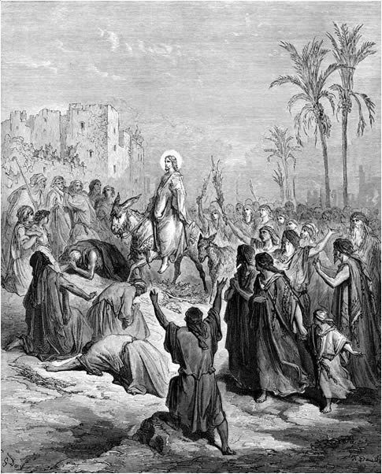
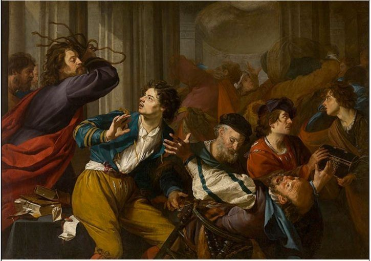
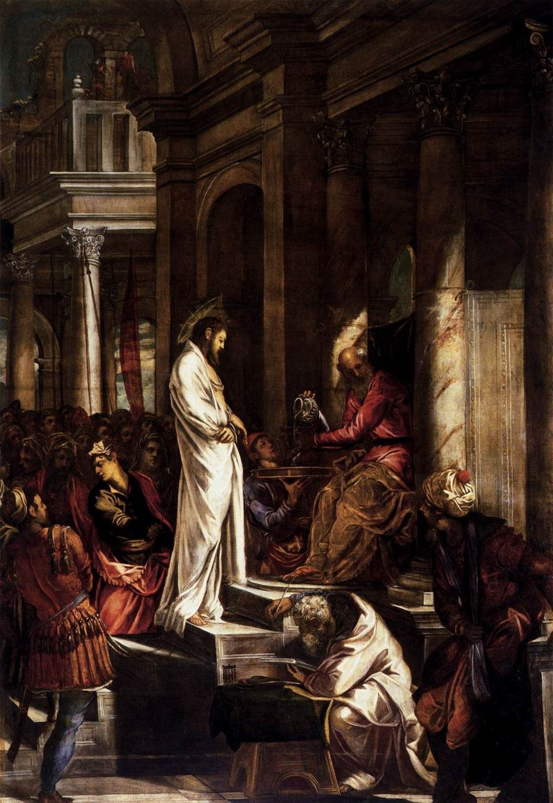
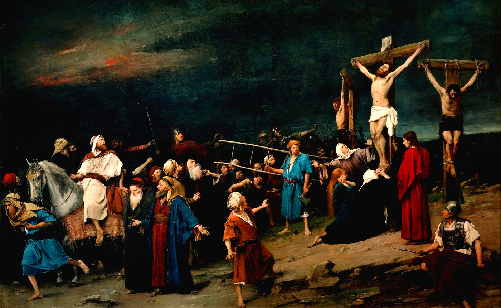

Jesus of Nazareth preaches in Galilee and Judaea. Both are under Roman control, but the arrangements differ. Galilee is governed by Herod Antipas, who keeps his own revenues and his own troops and who holds the territory only as long as Rome permits it. Judaea has no such ruler. Rome administers it through an official of its own, the prefect Pontius Pilate, who commands locally recruited auxiliary troops and answers to the emperor.
The ground Jesus covers is small. Galilee runs about thirty miles north to south, two days on foot. The Galilean chapters of Mark, Matthew, and Luke stay within a few miles of the northern shore of the Sea of Galilee, a freshwater lake thirteen miles long, and return again and again to two villages, Capernaum and Chorazin. Nazareth is home to perhaps 400 people, Capernaum to no more than 1,700.
No surviving text reports how many followers Jesus had during his lifetime. The Gospels give three lists of twelve close disciples, differing on one or two names. Mark's runs: Simon Peter; James and John, the sons of Zebedee; Andrew; Philip; Bartholomew; Matthew; Thomas; James (son of Alphaeus); Thaddaeus; Simon the Cananaean; and Judas Iscariot. Luke replaces Thaddaeus with Judas (son of James). Paul's letters, written some fifteen years before the earliest Gospel, refer to “the Twelve” as a group his readers already know. Past that circle, the numbers are guesses. Acts puts about 120 followers in Jerusalem after the crucifixion, yet Paul reports one appearance of Jesus to a crowd of more than 500.
Jesus preaches to Jews within the faith of Judaism. His subject is the kingdom of God, or the Jewish expectation that God will some day rule the earth directly. Jesus preaches to his followers that this day is near. He describes the coming of God by saying the hungry will be fed, debtors will be released, and any man hired at the end of the day will be paid as much as the one who worked since morning.
c. AD 302 of 20
Jerusalem and Passover

The entry into Jerusalem
Around AD 30, Jesus travels to Jerusalem for Passover. The festival marks the Jews’ exodus from Egypt, when God is said to have freed the Israelites from slavery. Jerusalem is home to the Temple, the most sacred site in Judaism. While synagogues served as meeting places and study houses across the region, only the Temple could serve as a place of sacrifice. During Passover, Jews come from far and wide to slaughter a lamb at the Temple and celebrate within the city walls. The population of Jerusalem swells for the week. Rome’s own religion is Greco-Roman polytheism, the worship of many gods, and it excuses Jews from the imperial cult: rather than sacrifice to the emperor, Jewish priests sacrifice at the Temple on his behalf.

Christ driving the money changers from the Temple
In the city, Jesus enters the Temple and drives out the men selling sacrificial animals, overturning the tables of the money changers. His motivation for doing so is unclear, though there is general agreement that Jesus is not acting against the rites of sacrifice. Some see his actions as a protest against the dishonesty and corruption of the sellers. Others see a protest against the priestly aristocracy appointed by Rome. Another reading suggests Jesus was signaling the Temple’s coming end and the expectation that God would replace it with a new one in the kingdom of God. What is not disputed is that the disruption caused by Jesus at the Temple, and the size of the crowd around him, gains the attention of the Temple authorities. Within days he is arrested, questioned, and handed over to Pilate.

Christ before Pilate · 1566–67 · Oil on canvas, 515 x 380 cm · Scuola Grande di San Rocco, Venice
c. AD 303 of 20
The execution
Crucifixion is a public punishment used by Roman authorities on slaves, rebels, and provincials — people who live in Rome's provinces who do not have Roman citizenship. Citizens are specifically exempt—any citizen sentenced to death is beheaded. Crucifixion is designed as a penalty for people with no standing to protect them.
The condemned is flogged, then made to carry the crossbeam to an execution ground outside the city walls, where often an upright post already stands. No source records what the beam weighed, but estimates range from about seventy-five to a hundred and twenty-five pounds. Death comes over hours, by asphyxiation, once the body can no longer hold itself up to breathe. The corpse is normally left on the post afterward, because leaving the dead on display is considered part of the penalty.
Two writers outside the Jesus movement record his execution. Josephus, a Jewish historian writing about AD 93, and Tacitus, a Roman senator writing about AD 116. Both state that Pilate condemned Jesus to death.

Golgotha · 1884 · Oil on canvas, 460 x 712 cm · Déri Museum, Debrecen
The Gospels place the execution at Golgotha, a rise just outside the walls of Jerusalem and a short walk from the Temple. Two other condemned men are crucified alongside him. Mark calls them bandits, using the word Josephus applies to insurgents, and no text gives their names.
Jesus dies on the day of his crucifixion. The Gospels then report a burial. Rome normally denied a grave to the crucified and that denial was part of the punishment. However, Jewish law required a hanged body to be taken down before nightfall. Josephus says Jews observed this even for the crucified and Roman governors are known to have released bodies to families on request. The Gospels say Joseph of Arimathea, a member of the council that handed Jesus over, asks Pilate for the body and is granted it. He wraps Jesus' body in a linen cloth and lays it in a rock-cut tomb near the execution ground, closing the entrance with a stone. Women among Jesus' followers are said to have watched and marked the place of his burial. Historians continue to debate whether Jesus was buried in a tomb or received no burial at all. The crucifixion scatters Jesus' followers.
c. AD 304 of 20
The movement begins
Acts of the Apostles, a book of the New Testament, puts Jesus’ followers back in Jerusalem within weeks, speaking of reports that he has risen and that some have seen him. Paul, writing to Corinth about AD 55, sets the witnesses in order: Peter first, then the twelve, then more than five hundred at once, then James, then all the apostles, then Paul himself.
Jesus' followers remain Jews who keep Jewish law and worship at the Temple. The first Christians are Jews. What marks them out is not what they stop doing as adherents of Judaism but what they add. They go to the Temple to pray and keep the Jewish festivals, but they also meet in each other's houses, share a meal in memory of the last one Jesus ate, and admit new members to their community by baptism in Jesus’ name. They call him messiah, the anointed king Jewish tradition expected, and they say God raised him from the dead. None of that requires leaving Judaism. It makes them a party within it, as the Pharisees and the Essenes are parties within it.
There is no separate religion to join and for about twenty years there remains none. To follow Jesus is to belong to a movement inside Judaism, and its members go on observing the sabbath, Judaism's food laws, and the practice of circumcision. What ultimately divides them is what to do about non-Jews who want to join. Some in the movement hold that a gentile must first become a Jew in order to join, meaning circumcision and adhering to the laws of Moses. Others hold that this is not necessary.
The apostles meet at Jerusalem about AD 49 to settle the dispute. Peter and Paul argue that gentiles should not have to first become Jews in order to join. James, who leads the Jerusalem community, rules with them. Gentile converts are thereafter not required to be circumcised. They are asked instead to keep four restrictions: no meat offered to a pagan god, no eating of blood, no meat from an animal killed without draining its blood, and no sexual relationships forbidden under Jewish law. For gentile Christians, all four restrictions correspond to rules Leviticus applies to foreigners living among Jews.
Dropping the practice of circumcision is what makes the creation of a separate religion possible. A movement that no longer asks its members to become Jews can grow among people who are not Jews, and over the following decades it does, until it is no longer inside Judaism at all.
Thus, Christianity spreads across the Roman Empire and past its eastern edge, into Persia (modern-day Iran), and beyond. Every Christian denomination of today traces its descent to these early followers of Jesus.
Before AD 305 of 20
Gods who die and return
Stories of gods who die and return were not new in Jesus' time and in fact had existed for centuries. In the sixth century BC the book of Ezekiel describes a vision of the Jerusalem Temple with women at its north gate mourning Tammuz, a Mesopotamian god who goes down to the underworld and returns. The Phoenician city of Tyre, thirty-five miles from Nazareth, celebrated an awakening of its chief patron god Melqart once a year. Texts from the ancient city of Ugarit tell of a god named Baal who dies and returns. Historical evidence also shows that the people of Byblos, an ancient port city in Phoenicia (modern-day Lebanon), held annual celebrations marking the death and resurrection of Adonis, the mythological god of love, beauty, and rebirth. In Egypt, Osiris is killed by his brother, cut apart, and reassembled to rule the dead.
Greco-Roman polytheism had other resurrection stories. Persephone came up from the underworld each spring. Her return was the basis of the Eleusinian Mysteries, a secret rite held outside Athens. It admitted new members once a year, promised them a better fate after death, and forbade them to describe the ceremony. In another example, Herakles is burned on his pyre and becomes a god. Asclepius heals the sick and raises the dead until Zeus kills him for it, and Romans maintained healing temples in his honor.
Rome told a version of the same story about its own founder. Romulus vanishes in a storm while reviewing the army outside the city walls, and the crowd declare him a god and the son of a god. A man named Proculus Julius later tells them Romulus appeared to him at dawn with a message for Rome. Livy records all of this, and also the rumor that the senators had torn Romulus apart.
Whether any of it shaped the Christian story is not something the evidence can settle. Nothing survives in which a Christian writer draws on these older stories, or the reverse, and what does survive was written down long after the practices it describes.
Such stories were not confined to the Mediterranean, and appear in cultural and religious histories from around the world. For example, the Yoruba of Nigeria told of Shango, a king whose death was denied and who thus became a god. The ancient Maya people of Guatemala told of twin brothers who are killed in the underworld, come back, and bring their dead father with them.
303 – 3116 of 20
Persecution and the breakdown of shared rule
In the second and third centuries, episodic persecution of Christians takes place across the Roman Empire as its religious and political culture reacts to the growing religious movement. By the late third century, however, Christians have experienced roughly forty years of relative peace, during which communities acquire property, build churches, and develop increasingly organized institutions.
Beginning in 303, Diocletian reverses this tolerance, ordering churches demolished, scriptures burned, clergy imprisoned, and Christians stripped of certain civil rights and barred from public office. Yet these measures fail to significantly stem the growth of the church. In 305, Diocletian abdicates but leaves in place a system in which multiple emperors share rule of the empire. Power is divided among rulers in western and eastern regions, but the arrangement quickly becomes contentious and marked by rivalry.
In 311, Galerius — senior emperor in the East and one of the principal architects of the persecution — acknowledges that efforts to force Christians back to traditional Roman religion have failed. Gravely ill and only days from death, he issues an edict of toleration permitting Christians to assemble again and asking them to pray to their God for the welfare of the emperor and the empire.
His death further destabilizes the already fracturing system of shared rule. In the West, Constantine, who controls Britain and Gaul, competes with Maxentius, who holds Italy and Rome. In the East, Licinius controls much of the Balkans, while Maximinus Daia — Galerius’s nephew and former junior emperor — rules Syria, Egypt, and other eastern provinces and continues anti-Christian policies there.
312 – 3137 of 20
Constantine and the rise of imperial Christianity
In 312, Constantine invades Italy and defeats Maxentius at the Milvian Bridge outside Rome, leaving Constantine as the dominant emperor in the West. Lactantius, writing soon after the battle, says Constantine was instructed in a dream to place a divine sign on his soldiers’ shields before fighting; Eusebius, writing decades later and claiming Constantine as his source, describes a vision of a cross and a divine promise of victory. Both accounts connect Constantine’s victory with the Christian God, although they differ substantially in their details. Whatever the precise nature of his conversion, Constantine increasingly comes to view the Christian God as the source of divine favor behind his rule. His support of the church also serves an imperial purpose: its growing network of bishops and communities offers a powerful institution through which religious unity, social order, and imperial authority can reinforce one another.
In 313, Constantine and Licinius meet at Milan and agree to guarantee religious freedom throughout the empire and restore property confiscated from Christian communities. Later that year, Licinius defeats Maximinus Daia, leaving Constantine in control of the West and Licinius in control of the East. Constantine then goes beyond simply reversing the persecution: he funds new basilicas, grants clergy exemptions from certain civic duties, and gives bishops recognized authority to arbitrate civil disputes. Within two decades of Diocletian’s Great Persecution, Christian communities have recovered confiscated property and gained new buildings, clergy enjoy new imperial privileges, and bishops exercise recognized legal authority.
These changes increasingly affect everyday life as well as the church hierarchy. Christians can worship publicly, construct prominent churches, and participate in a religion now favored by the emperor, while traditional polytheistic worship remains widespread and Jews continue to practice their religion, although Constantine begins imposing new restrictions on Jewish communities. Slavery and the empire’s deep inequalities remain intact, even as Christian churches expand charitable activity and Constantine allows slaves to be legally freed in churches. Roman society has not suddenly become Christian, but Christianity has moved from the margins of public life toward its center, beginning a transformation that will increasingly affect Christians, Jews, polytheists, slaves, and free people alike.
325 – 3918 of 20
Nicaea and the state church
Milan makes Christianity legal, not official. Theodosius makes it official in 380, requiring every subject of the empire to hold the faith of the bishops of Rome and Alexandria, and closes the temples to public sacrifice in 391.
Judaism does not go anywhere. Titus destroys the Second Temple in 70, and Hadrian crushes the revolt of Bar Kokhba in 135 and bars Jews from Jerusalem, but the religion reorganizes around the synagogue and the rabbis in place of sacrifice. Judah ha-Nasi compiles the Mishnah about 200; the Jerusalem Talmud follows about 400, and rabbis in Persia, beyond Roman reach, finish the Babylonian about 600. Christian emperors leave Judaism legal and steadily hem it in: the Theodosian Code bars Jews from public office, restricts new synagogues, and makes conversion to Judaism a crime.
Twelve years after Milan, bishops meet at Nicaea and condemn Arius, a senior priest in Alexandria, who taught that the Son was created by the Father rather than eternal with him. Constantine summons the council and opens it himself.
The council settles on a single word, homoousios, of the same substance. Its theological rival differs by one letter: homoiousios, of like substance.
A second council at Constantinople adds the section on the Holy Spirit and completes the creed still recited in most of the churches on this page.
Around the same time the Cappadocian fathers — Basil of Caesarea, Gregory of Nyssa, and Gregory of Nazianzus — solve a vocabulary problem that had made the Trinity impossible to state: ousia for what God is, of which there is one, and hypostasis for who God is, of which there are three.
The Council of Ephesus condemns Nestorius, patriarch of Constantinople. Nestorius holds the divine and the human in Christ apart from each other. On his account Mary bears a man in whom God dwells rather than God himself, so no one can call her Mother of God.
The church in Persia, self-governing since 424 and beyond Roman rule, rejects the ruling. It holds that Christ has two clearly distinct natures, one divine and one human, and its missionaries follow the Silk Road east and found churches as far away as India and China.
It is the first church to separate, and it has never returned.
Chalcedon defines Christ as one person in two natures, divine and human. The Coptic, Armenian, Syriac, Ethiopian, and Malankara churches refuse that wording.
They hold that at the incarnation the divine and the human join in Christ into a single nature, neither absorbing the other. They call that position miaphysite.
Since the 1970s their patriarchs have signed declarations with Rome, and their theologians have agreed statements with the Eastern Orthodox, concluding that both sides believe the same thing about Christ and that the words they used for it divided them. The churches remain out of communion.
The Second Council of Nicaea in 787 ends the first campaign against religious images. It is the last council both East and West accept.
After it the Greek-speaking East and the Latin-speaking West drift apart over language, politics, and two questions: whether the pope holds authority over all other bishops, and whether the Spirit proceeds from the Father alone. In 1054 legates from Rome and Michael Cerularius, patriarch of Constantinople, excommunicate one another. Both sentences name the men involved rather than their churches.
The lasting break comes in 1204, when Western crusaders sack Constantinople and hold the city for the next fifty-seven years.
Rival popes in Rome and Avignon claim the office at once. The spectacle discredits the papacy and makes the case for reform to people who have no intention of leaving the church.
No church separates over it. The papacy loses standing instead, just as reformers begin arguing that authority lies somewhere else.
151714 of 20
Luther
Martin Luther, an Augustinian friar teaching at Wittenberg, posts 95 arguments against the sale of indulgences on October 31, 1517. An indulgence cancels part of the punishment still owed for sins already forgiven, and by 1517 anyone can buy one for cash. Printing turns an academic objection into a rupture within months.
The churches that follow hold that Scripture outranks church tradition, that God accepts people through faith rather than earned merit, and that only baptism and communion count as sacraments.
Protestantism is not a single church. The word covers thousands of separate denominations, and new ones keep forming.
1525 – 153415 of 20
The Reformation multiplies
Zurich, January 1525: Conrad Grebel baptizes George Blaurock as an adult, Blaurock baptizes the rest, and they argue that no one inherits faith. Zurich drowns Felix Manz in the Limmat, the river running through the city, in 1527, choosing the method to mock him: a third baptism for a man who had insisted on a second. The imperial diet at Speyer makes rebaptism a capital offence across the Empire in 1529. The Mennonites and the Amish descend from those who survived.
Marburg, 1529: Martin Luther and Huldrych Zwingli, who led the reform in Zurich, agree on fourteen of fifteen articles and break on the fifteenth, over whether is in “this is my body” means is or signifies. Lutheran and Reformed separate over one verb.
London, 1534: Parliament makes Henry VIII head of the English church so that he can annul his marriage. Doctrine has nothing to do with it. Thomas Cranmer, his archbishop of Canterbury, supplies the theology afterward.
The Council of Trent defines Roman doctrine against the Reformers and overhauls the training and conduct of the clergy. It affirms transubstantiation as the apt term in 1551.
It also requires every diocese to train its priests in a seminary.
John Smyth baptizes believing adults in Amsterdam in 1609 and founds the first Baptist congregation. George Fox's Quakers, from 1652, drop clergy and sacraments altogether and meet in silence.
John Wesley converts at a London meeting in 1738 and starts a revival inside Anglicanism that runs on personal holiness, lay preaching, and hymns. Methodism leaves the Church of England after his death.
After American independence, Anglicans who can no longer swear loyalty to the crown constitute the Episcopal Church in 1789.
190618 of 20
Azusa Street
William Seymour, a Holiness preacher, leads a revival in Los Angeles that turns Pentecostalism into a global movement. Pentecostals teach a second experience after conversion, baptism in the Holy Spirit, which shows itself in speaking in tongues and in healing.
Pentecostalism comes out of the Holiness movement, Holiness out of Methodism, and Methodism out of a revival inside the Church of England.
1962 – 196519 of 20
The turn outward
The Second Vatican Council lets priests say the Mass in local languages instead of Latin, gives lay people a part in worship, and reopens dealings with the churches Rome had separated from.
In 1965 Pope Paul VI and Patriarch Athenagoras revoke the mutual condemnations their predecessors issued in 1054, nine hundred and eleven years late. The separation remains.
Today20 of 20
Where it stands
Five branches, all claiming the same descent, counted by adherents: Roman Catholic, 1.4 billion. Protestant, 1 billion across thousands of bodies. Eastern Orthodox, 220 million. Oriental Orthodox, 50 million. The Assyrian Church of the East, under 1 million.
No one has undone a split since 431. Both sides have declared several of them to rest on misunderstanding. The splits remain in force.